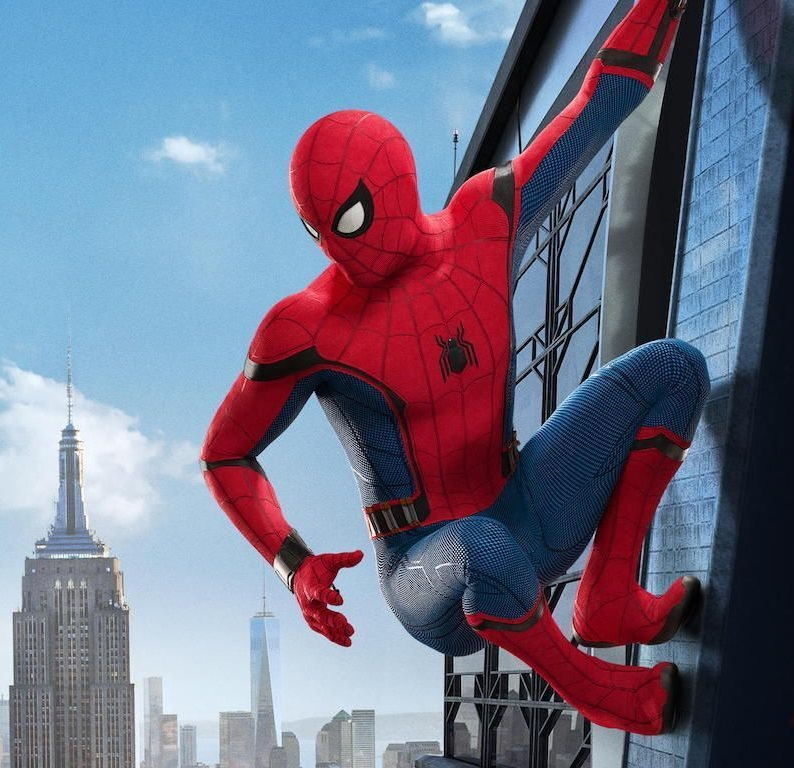
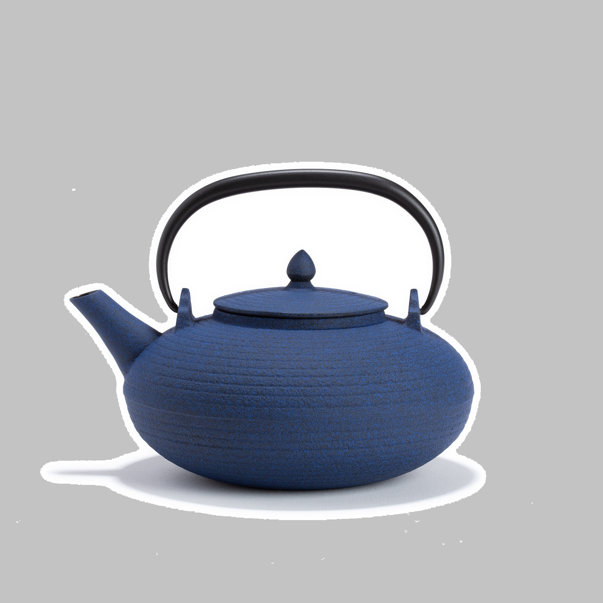
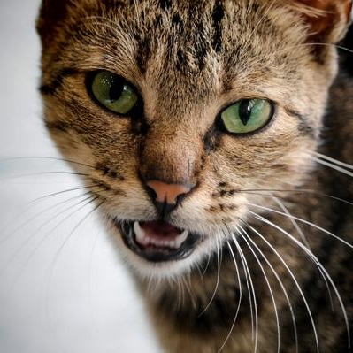

Les personnes, objets et concepts qui existent dans l’univers
(liste non exhaustive)
Spider-man est un personnage de fiction inventé par un humain qui vivait sur terre, dans le monde réèl.
Les supernovas sont des étoiles en fin de combustion. Un phénomène aussi beau que rare.
Les théières sont des objets, présents dans le monde réèl. Créées par des humains. C’est bien les humains.
Windows 11 est un système d'exploitation utilisé par des millions d'utilisateurs à travers le monde. C'est incr !!
Les théières sont des objets, présents dans le monde réèl. Créées par des humains. C’est bien les humains.
La campagne est une partie du monde caracterisé par une forte présence animale et végétale.
En savoir plus...